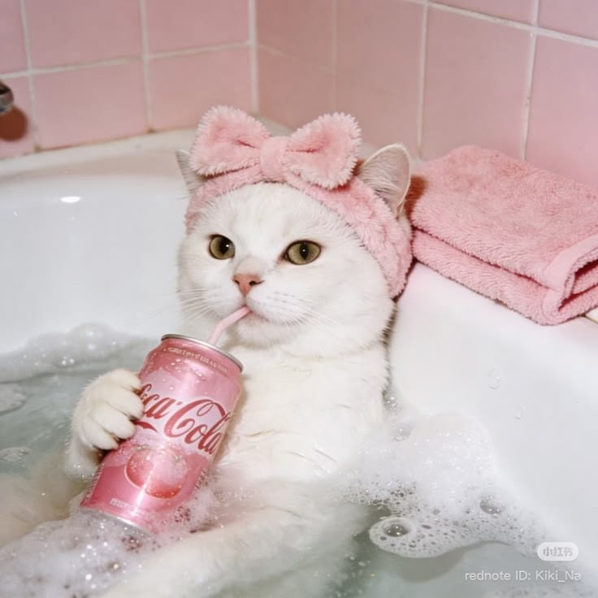

Мой фаворит — розовая повязка с бантом
В моём гардеробе больше двадцати нарядов, но если бы пришлось выбрать один, я бы не сомневалась ни секунды.
Повязку мне подарила хозяйка на первый день рождения. Тогда я была пушистым комочком, и бант был почти больше меня. Сейчас он сидит идеально.
Почему именно она? Повязка подходит к любому образу: к пенной ванне, к фотосессии и даже к ленивому воскресенью на диване. В ней я чувствую себя собой — немного принцессой и немного хулиганкой.
Пять фактов о моём фаворите
- Цвет: нежно-розовый, как мой нос.
- Материал: мягкий плюш, не давит на ушки.
- Надевала на все фотосессии этого года.
- Однажды её стащил кузен Персик. Нашли под диваном.
- Хранится в отдельной коробочке — как жемчуг.